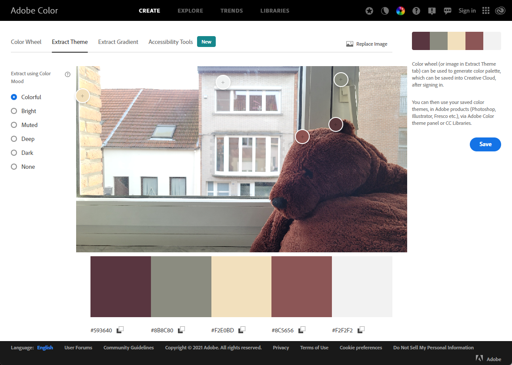

Choosing fonts
Introduction
Choosing the right font is hugely important. A font supports the message you want to deliver to the reader in 2 ways. On the one hand, a smoothly readable font is necessary to let the content of your site affect the surfer properly. On the other hand, the chosen font accentuates who your site's target audience is. For a broad target audience, always choose sans serif fonts. These can be common sans serif fonts such as Arial or Verdana, but thanks to Google Fonts there is a much larger selection of sans serif webfonts with which you can make the difference. On a site you use no more than 2 different fonts. For the majority of texts you choose a sans serif font that is easy to read. Only for the titles you can consider choosing a slightly more artistic font, possibly even a font with serifs or a font that looks handwritten. This is often done on sites where luxury goods are offered.
Wide audience
Elegance
- Title: Waterfall
- Other text: Merriweather
Hip
- Title: Shizuru
- Other text: Ubuntu Mono
Choose colors
Introduction
Choosing the right color scheme is necessary to support the "call to action" of the website. A website for the general public should have neutral colors, rather dull, but acceptable to everyone worldwide - regardless of origin, language or culture. Those who want to emphasize that everything on the site is cheap opt for accents in bright red, bright yellow and/or bright blue. These colors stimulate our brain and motivate impulse purchases. If you want to emphasize timeless elegance and convince (older, richer) customers to opt for luxury products with a higher price tag, it's best to use subtle shades of gray. If you want to appeal to a young audience in particular, you have to find a connection with the world of that audience. For children it can be very colorful, for teenagers (and hipsters) a negative design with a black background. Choosing colors is an art in itself, you have to learn which colors go together. 1 golden tip: colors that occur together in nature, always match. That's why color schemes are often made based on a photo. Thanks to the photo, the client immediately sees what atmosphere the colors evoke. You do not need special software or a camera for this. Adobe will help you for free at color.adobe.com.
Neutral
- Color 1: Skyblue
- Color 2: Lightblue
- Color 3: #66caca
Cheap
- Color 1: darkblue
- Color 2: orangered
- Color 3: yellow
Luxury
- Color 1: #7c0834
- Color 2: lightgrey
- Color 3: #663030
Young
- Color 1: black
- Color 2: white
Based on a photo
- Color 1: #593640
- Color 2: #f2e0bd
- Color 3: #8c5656
